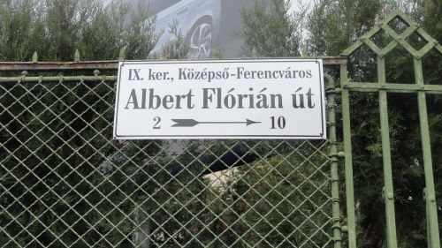
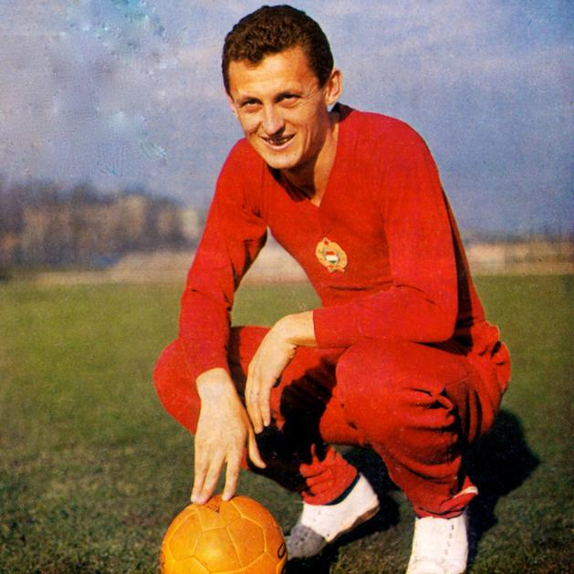
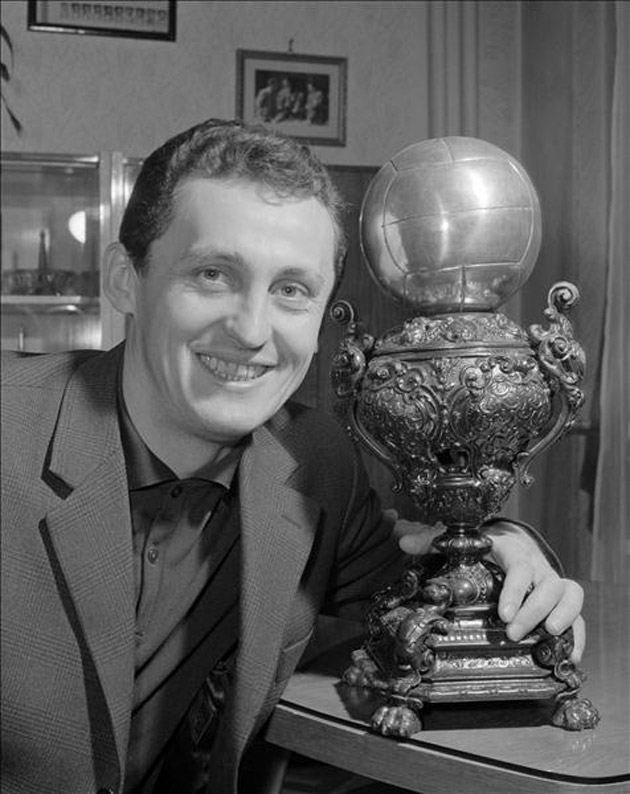

Élete

Albert Flórián (Hercegszántó, 1941. szeptember 15. - Budapest, 2011. október 31.) az egyetlen magyar aranylabdás válogatott labdarúgó, játékos posztja: középcsatár és középpályás, a Nemzet Sportolója. Becenevei Császár és Flóri voltak. 2007. december 21-én délben átkeresztelték az Üllői úti stadiont, a neve Albert Flórián Stadion lett.
Az 1950-es évek végétől az első kiemelkedő képességű játékos. Nagyon fiatalon lett elismert labdarúgó. Kiválóan cselezett, labdáit vonzotta a kapu. Önéletrajzaiban önkritikusan megemlíti, hogy nagyon szeretett játszani, de nem szeretett edzeni. Életpályája konfliktusokkal terhelt volt. 1974. március 17-én fejezte be az aktív játékot.
70 évesen, 2011. október 31-én hunyt el szívinfarktus következtében. 2011. november 6-án kísérték utolsó útjára az Óbudai temetőben.
Fradi
Albert Flórián pályafutása alatt végig, 1958-tól 1974-ig a Ferencváros játékosa volt. A Ferencvárosnál bajnoki és különböző kupamérkőzéseit összeszámolva összesen 537 mérkőzésen lépett pályára a felnőtt csapatnál, ezeken 383 gólt szerzett.
Háromszor lett gólkirály, négyszer nyert magyar bajnokságot, egyszer nyert Magyar Népköztársasági-kupát. 1965-ben megnyerte a Vásárvárosok Kupáját, miután 1-0-ra győztek az olasz Juventus ellen.
1958. november 2-án debütált a felnőttcsapatban, mikor a Ferencváros a Diósgyőr ellen játszott a Népstadionban. A mérkőzésen máris két gólt szerzett. 1960-ban bajnoki ezüstérmes lett a csapattal, és 27 góllal a gólkirályi címet is megszerezte. 1961-ben ismét gólkirály lett 21 góllal, holtversenyben Tichy Lajossal. 1963-ban a Ferencvárossal bekerült a Vásárvárosok Kupája elődöntőjébe, azonban csak a bronzérmet szerezték meg, mivel 3-1-re kikaptak a jugoszláv NK Dinamo ellen.
Ezt ellensúlyozta, hogy magyar bajnokok lettek, majd a következő évben is megismétlődött a siker. 1965-ben csak a második helyet szerezték meg a bajnokságban, de Albert 27 góllal, immár harmadszorra, gólkirály lett. A Fradi a Vásárvárosok Kupájában ebben a szezonban is szárnyalt, ezúttal egészen a döntőig, ahol a Juventus legyőzésével a kupát is megszerezték, Albert az 1965-ös Aranylabda szavazáson pedig a hatodik helyen végzett.

A válogatottban
1958-ban, 17 évesen lett válogatott játékos. Előtte 25 évvel történt hasonló eset. Az egyre eredményesebb csatársornak nem sokkal később már ünnepelt csillagává nőtte ki magát. 1959. június 28-án mutatkozott be a válogatottban Svédország ellen. A mérkőzés 3-2-es magyar sikert eredményezett. 1959. október 11-én Belgrádban, élete harmadik válogatott mérkőzésén három gólt is szerzett a jugoszláv válogatott ellen. Ezután eredményes volt Svájc és az NSZK ellen is.
1960-ban bekerült az olimpia magyar válogatott keretébe is, a tornán a bronzérmet szerezték meg. A válogatott csoportelsőként jutott az elődöntőbe, ahol azonban Dániától vereséget szenvedtek, majd a bronzmérkőzésen 2-1-re győzték le Olaszországot. Albert 5 gólt szerzett a torna során: egyet India ellen, valamint kettőt-kettőt Peru és Franciaország ellen. Az 1966-os világbajnokságon kiemelkedő játékot produkált, amire felfigyelt az európai sportsajtó. 1969. június 15-én Koppenhágában a Dánia elleni világbajnoki selejtezőn súlyos sérülést szenvedett. 1974. május 29-én elbúcsúzott a válogatottól is. Pályafutása alatt 75 válogatott mérkőzésen 32 gólt szerzett.
Emlékezete
2007. december 21-én délben átkeresztelték az Üllői úti stadiont, a neve 2014 júliusáig Albert Flórián Stadion volt.
2011. október 7-én Budapest IX. kerületének díszpolgárává választották. Az elismerést Bácskai János, a kerület polgármestere nyújtotta át Albertnek.
A magyar válogatott 2011. nov. 11-én emlékmérkőzést játszott tiszteletére (Magyarország-Liechtenstein 5:0); az Albert Flórián-emlékmérkőzésen, a magyar válogatott tagjai közül senki sem játszott a 9-es mezben. Emlékét őrzi az Albert Flórián Utánpótlás- és Sportalapítvány, amely az FTC legtehetségesebb és legsikeresebb utánpótláskorú versenyzőit támogatja. Az alapítvány 2013-tól Albert-életműdíjat is adományoz a legeredményesebb ferencvárosi ifjúsági és nevelőedzőknek.
Róla mondták
Rendkívül szerény volt, rokonszenves a csapattársak számára is. Tisztelettudó, jó magatartású, jó modorú, intelligens fiatalember volt a magánéletben éppúgy, mint a pályán. Nem rúgott meg ellenfelet. Amellett hihetetlen, bámulatos cselezőkészsége volt, ami kivételes adottság, olyan, amit nem lehet megmagyarázni. Baróti így könnyen és gyorsan megtalálhatta a nagy hármast, Göröcs, Albert, Tichy személyében. A külföld is fölfigyelt erre a csodálatos mozgástechnikára és gólérzékenységre. 1967-ben megérdemelten ítélték neki oda az Aranylabdát.
Ő volt az a játékos, aki befért volna az Aranycsapatba is. 1941 szeptemberében született, még nem érte el a 18. életévét, mikor már a válogatott csapat tagja lett. Sőt, még a Puskás Öcsit is megelőzte ezzel. Már 1958-ban, 17 éves korában meghódította a közönséget, mert csodálatosan játszott, és nagyon viharos tapsot kapott a jugoszlávok elleni ifjúsági válogatott mérkőzésen.
- Szepesi György

Sikerei
- Egyetlen magyar Aranylabdás (1967)
- Négyszeres magyar bajnok (1963, 1964, 1967, 1968)
- VVK-győztes (1965)
- BEK-negyeddöntős (1966)
- Olimpiai bronzérmes (1960)
- Európa-bajnoki bronzérmes (1964)
- Kétszeres világválogatott (1962, 1966)
- 1962-es vb gólkirálya (megosztva)
- Az év magyar labdarúgója (1966, 1967)
- BEK gólkirály (1966, megosztva)
Ugrás a lap tetejére